A cromomicose, também conhecida como cromoblastomicose, é uma doença fúngica granulomatosa crônica, indolente, sendo causada por fungos pertencentes à família Dematiaceae (que apresentam conidiósporos escuros).
Epidemiologia
A cromomicose é mais prevalente nas regiões tropicais e subtropicais. Os agentes etiológicos mais frequentes são Fonsecaea pedrosoi (73%), Cladophialophora carrioni, Fonsecaea compacta, Phialophora verrucosa e Rhinocladiella aquaspersa. A literatura registra casos produzidos pelas espécies Exophiala jeanselmei, E. spinifera e E. castellanii. Os fungos podem ser encontrados em fragmentos de solo e planta. Diante disso, o risco de infecção está fortemente associado ao trauma cutâneo obtido durante o trabalho ao ar livre ou atividades recreativas, como o pastoralismo, caça e ecoturismo. A maioria dos estudos indica uma clara predominância masculina, principalmente em trabalhador rural.
Fisiopatologia
A infecção geralmente resulta de uma lesão cutânea traumática, onde os agentes ganham entrada no corpo humano por contato com solo e planta contaminados. Assim como acontece com outros fungos patogênicos, múltiplos fatores de virulência provavelmente desempenham um papel no desenvolvimento da cromomicose, tais como: presença de melanina na parede celular fúngica, hidrofobicidade e adesão celular. Além disso, os mecanismos que interferem com a resposta do hospedeiro podem contribuir para a persistência da infecção. As lesões se desenvolvem no local da inoculação, acometendo a pele e algumas vezes o tecido subcutâneo.
Manifestações clínicas
As manifestações clínicas aparecem pela primeira vez no local da inoculação semanas a meses após o trauma na pele, muitas vezes despercebido ou não lembrado. Desenvolve-se uma pápula pequena, eritematosa, assintomática. À medida que a lesão progride, ela assume um aspecto escamoso e infiltrado. Na ausência de diagnóstico precoce e tratamento, as lesões podem aumentar de tamanho e/ou espalhar-se localmente, produzindo lesões satélite. As manifestações da doença progressiva são polimórficas e pode ocorrer uma das cinco morfologias: nodular, verrucosa, tumoral, cicatricial e em placa.
Geralmente, a doença permanece localizada na área da infecção inicial ou da pele vizinha, mas pode ocorrer disseminação linfática e hematogênica, produzindo lesões metastáticas. O exame da superfície das lesões muitas vezes revela numerosos pontos negros ou uma aparência de “pimenta caiena”.
Os locais mais comumente afetados são as extremidades inferiores, especialmente os pés. As mãos, braços e nádegas também são frequentemente envolvidos, e relatos esporádicos mencionam lesões nos ouvidos, face, seios e axilas. No início da doença, os sintomas são mínimos. Porém, à medida que a doença avança, o prurido torna-se uma queixa dominante e pode ser acompanhado de dor local. A infecção secundária com bactérias é comum, dando à lesão um mau odor característico. Acredita-se que a infecção secundária seja importante na gênese da estase linfática e consequentemente no aparecimento do linfedema. Uma complicação letal é o carcinoma epidermoide.
Diagnóstico
A possibilidade de cromomicose deve ser suspeitada na presença de pápulas, nódulos ou placas persistentes, de crescimento lento, verrucosas ou hiperceratósicas em paciente que vivem ou viajaram para regiões tropicais ou subtropicais. Pontos negros ou uma aparência de “pimenta caiena” na superfície da pele afetada é um recurso clínico sugestivo. O diagnóstico pode ser confirmado através da detecção de estruturas de fungos pigmentados com a preparação de KOH ou biópsia de pele. As células típicas, com paredes grossas, cor de charuto e escleróticas são facilmente vistas. Embora essas células sejam patognomônicas da cromomicose, elas não fornecem informações específicas sobre o agente.
Diagnóstico diferencial
A cromomicose possui diagnóstico diferencial em decorrência das características clínicas da lesão, sendo fundamentais, para sua confirmação diagnóstica, exames específicos. Pode ser ser confundida com infecções semelhantes (lúpus vulgaris, sífilis terciária, hanseníase, esporotricose, coccidioidomicose, leishmaniose, filariose) e processos patológicos não infecciosos (micose fungoide, psoríase, sarcoidose, carcinoma de células escamosas).
Tratamento
Um sistema de classificação para a gravidade da doença ajuda a orientar a abordagem do tratamento:
– Doença leve: placa solitária ou nódulo < 5 cm de diâmetro;
– Doença moderada: lesões únicas ou múltiplas com morfologia nodular, verruga ou placa < 15 cm de diâmetro e envolvendo uma ou duas áreas de pele adjacentes;
– Doença grave: envolvimento extensivo de áreas de pele adjacentes ou não adjacentes.
A excisão cirúrgica pode ser curativa e é a abordagem terapêutica recomendada para doença leve. A terapia primária para pacientes com doença moderada a grave é a administração de um agente antifúngico oral. O itraconazol é o agente mais utilizado seguido da terbinafina. Trata-se com itraconazol nos casos leves e anfotericina B nos casos graves.
As doses diárias de itraconazol variam entre 200-400mg, durante 8 a 36 meses. As taxas de cura relatadas variam de 15-80%. Os casos graves devem ser tratados por vários anos, mas uma cura completa raramente é alcançada. As doses da terbinafina variam de 250-500mg/dia, com a duração variando de meses a anos, com base na gravidade da doença e na resposta ao tratamento. Outras drogas que podem ser utilizadas são: isavuconazole, posaconazole e voriconazole, esta última na dose de 200mg de 12/12 horas via oral por até 1 ano de uso. As combinações de agentes antifúngicos orais têm sido utilizadas para o tratamento de doenças refratárias a um único agente. A associação de itraconazol e flucitosina oral, assim com itraconazol e terbinafina produzem um efeito sinérgico.
A adição de terapias físicas (crioterapia, termoterapia, terapia a laser) à terapia antifúngica oral também pode ser útil. As múltiplas modalidades de tratamento são muitas vezes combinadas, como longos cursos de antifúngicos, excisão cirúrgica e terapias físicas destrutivas, pois a cromomicose é uma das infecções micóticas profundas mais difíceis de erradicar.
O tratamento pode ser interrompido quando os seguintes critérios para cura forem cumpridos: resolução clínica (desaparecimento de manifestações cutâneas com exceção da cicatrização atrófica) mantida por pelo menos 3-4 meses; resolução de prurido e dor local; biópsia mensal da pele que demonstre ausência de elementos fúngicos, atrofia epidérmica e substituição da inflamação granulomatosa por inflamação crônica e fibrose densa por 3 meses consecutivos; preparação mensal negativa de KOH por 3 meses consecutivos; cultura de tecido mensal negativa por 3 meses consecutivos. Após o término do tratamento, recomendam-se avaliações periódicas clínicas, micológicas e histológicas para confirmar a cura. Os pacientes devem ser seguidos durante pelo menos dois anos com reavaliações realizadas a cada três ou quatro meses.
REFERÊNCIAS BIBLIOGRÁFICAS
1. Diagnóstico de cromoblastomicose cutânea e sua resposta à terapia com anfotericina B: relato de caso. Furqan Ul Haq 1, Hamza Yunus 1, Rafia Mukhtiar 1, Ammar Ahmad 1, Romesa Akram 2, Sumaira Imran. Cureus. 23 de agosto de 2022;14(8):e28286. doi: 10.7759/.28286.
2. Cromoblastomicose. Flávio Queiroz-Telles 1, Sybren de Hoog 2. Clin Microbiol Rev Jan;30.2017(1):233-276.
3. Chromoblastomycosis-Leprosy Co-Infection in Central West Brazil. Presentation of Three Cases and Literature Review. Guevara A, Vicente VA, de Souza Lima BJF, Nery AF, Hagen F, Hahn RC. Mycopathologia. 2022 Aug;187(4):363-374.
4. [Chromoblastomycosis in Rio Grande do Sul: a report of 12 cases]. Matte SM, Lopes JO, Melo IS, Espadim LE, Pinto MS.. Rev Soc Bras Med Trop. 1997 Jul-Aug;30(4):309-11.
5. [Chromoblastomycosis associated with leprosy: report of 2 cases]. Silva Cde M, Silva AC, Marques SC, Saldanha AC, Nascimento JD, Branco MR, Silva RR, Costa JM. Rev Soc Bras Med Trop. 1994 Oct Dec;27(4):241-4.
Atlas de imagens 28


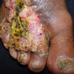

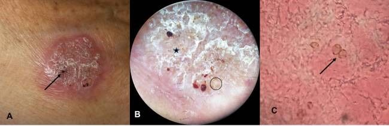

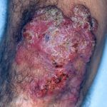

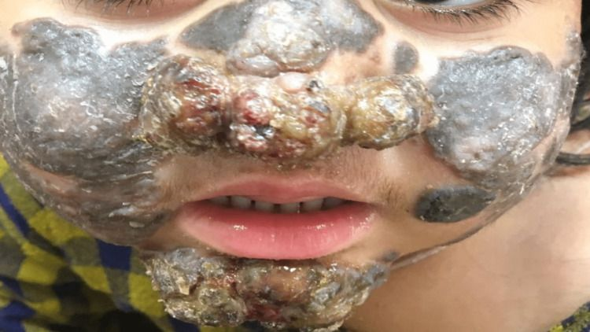

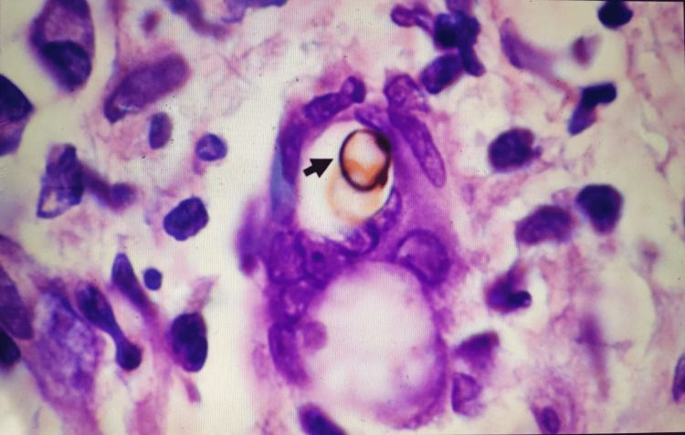

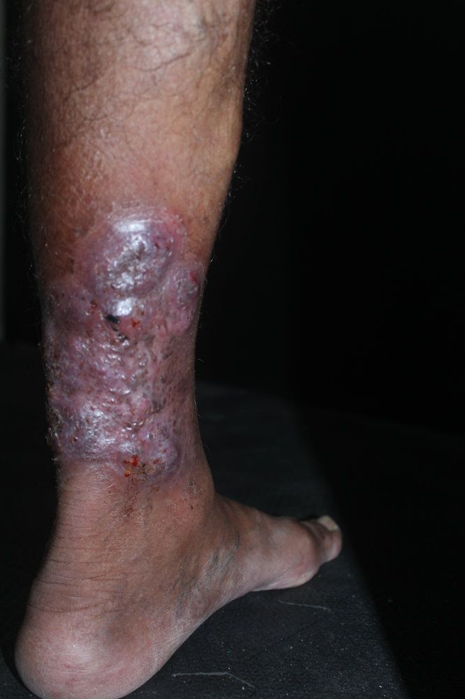

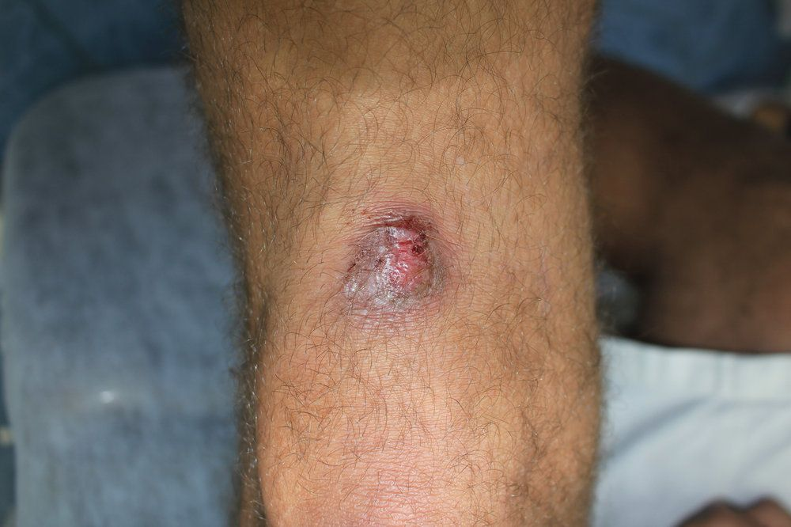

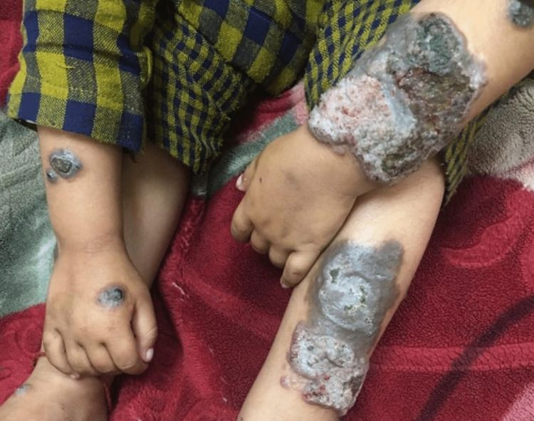

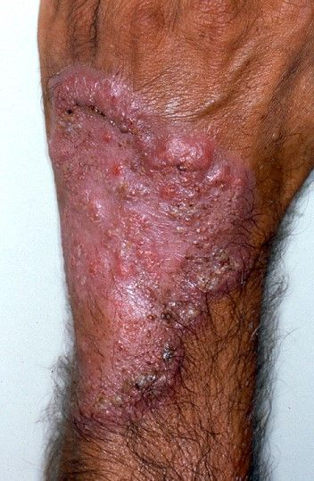

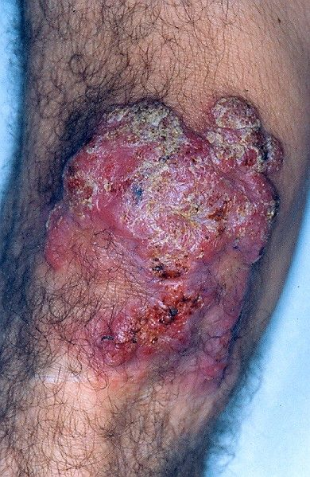

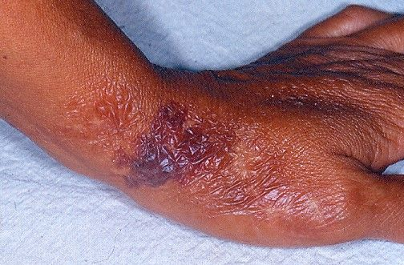

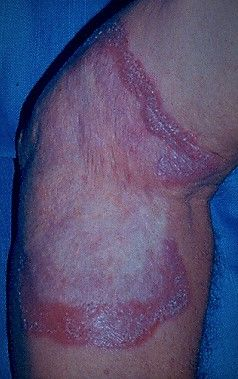

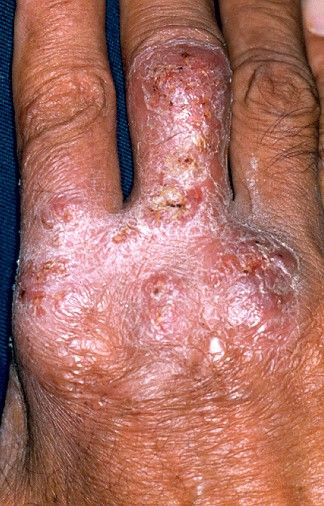

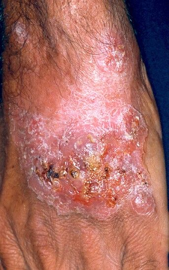

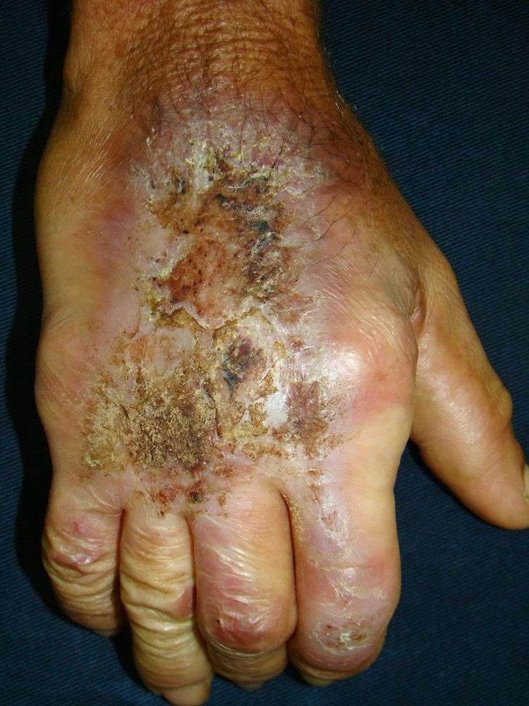

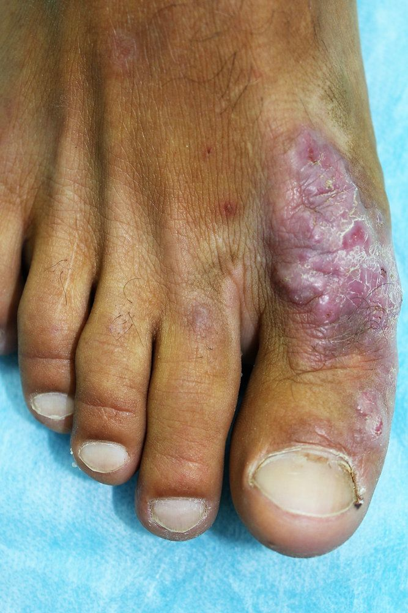

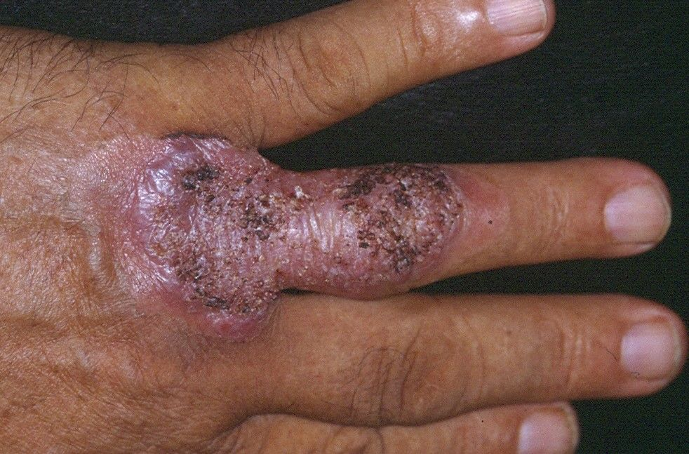

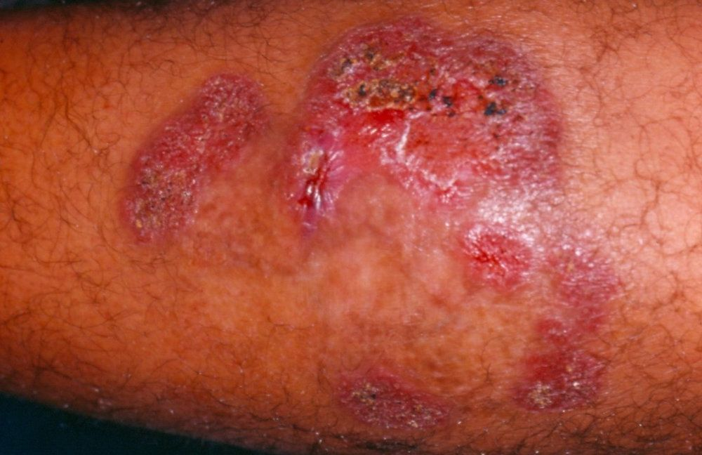

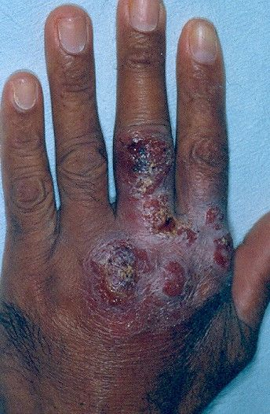

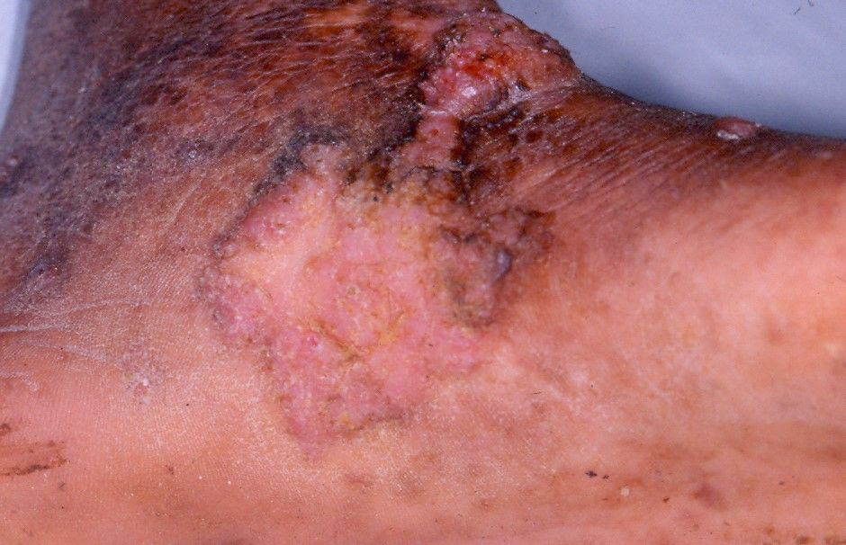

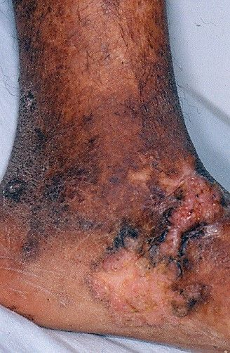

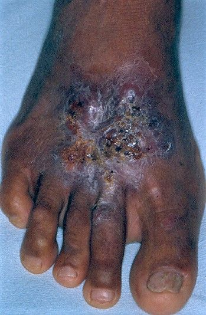

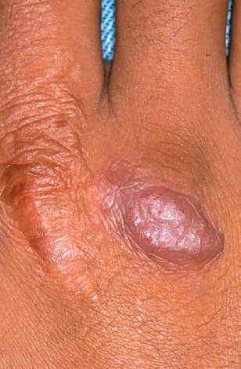

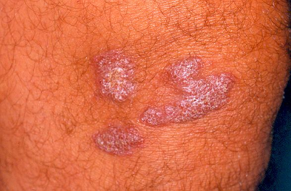

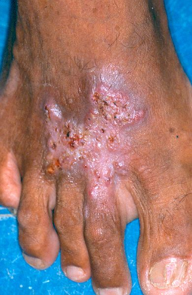

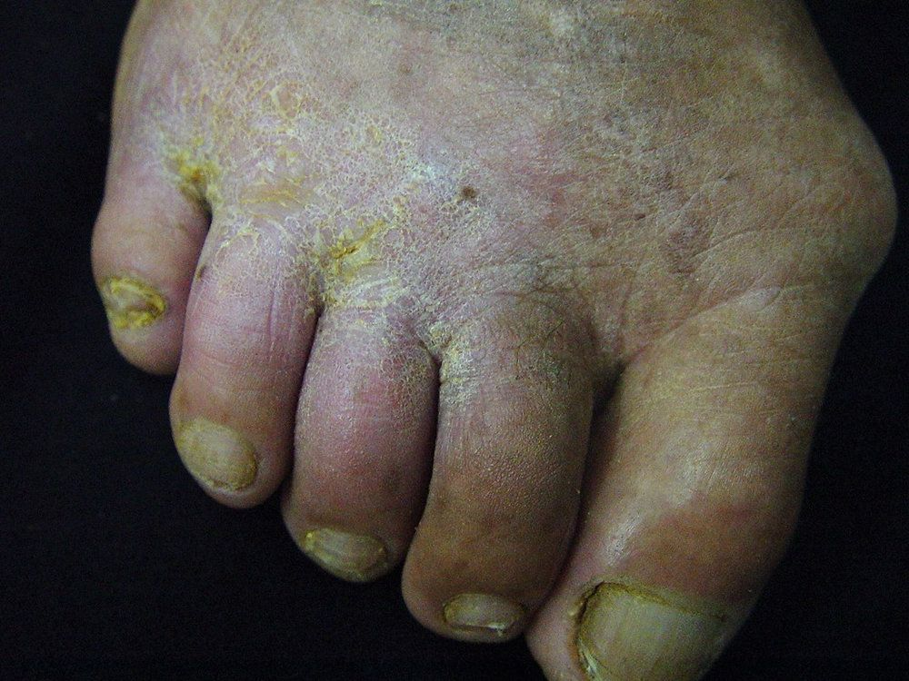

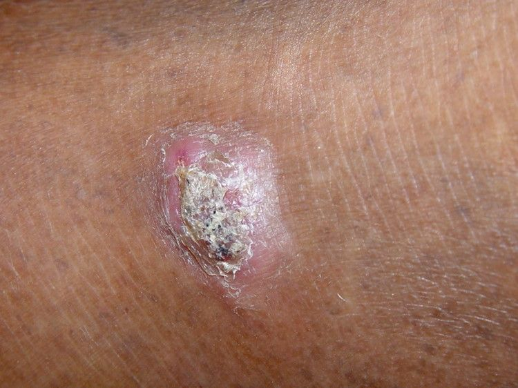